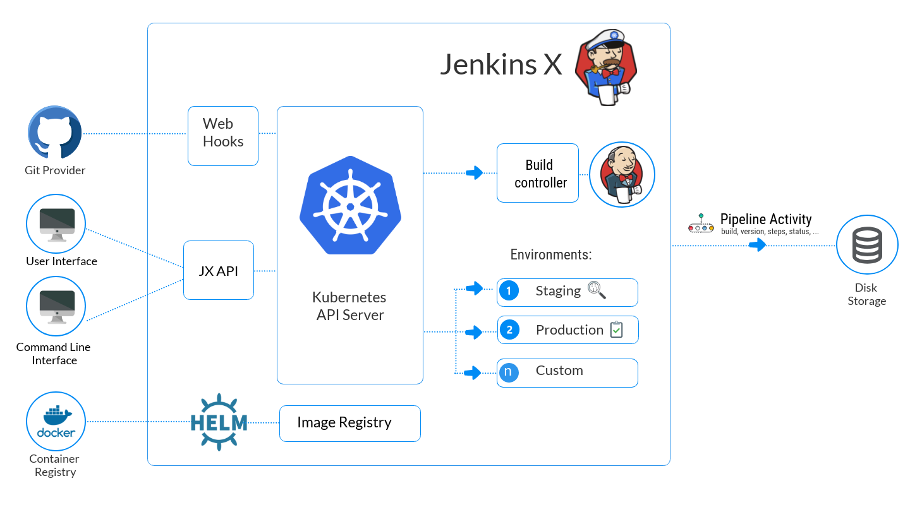
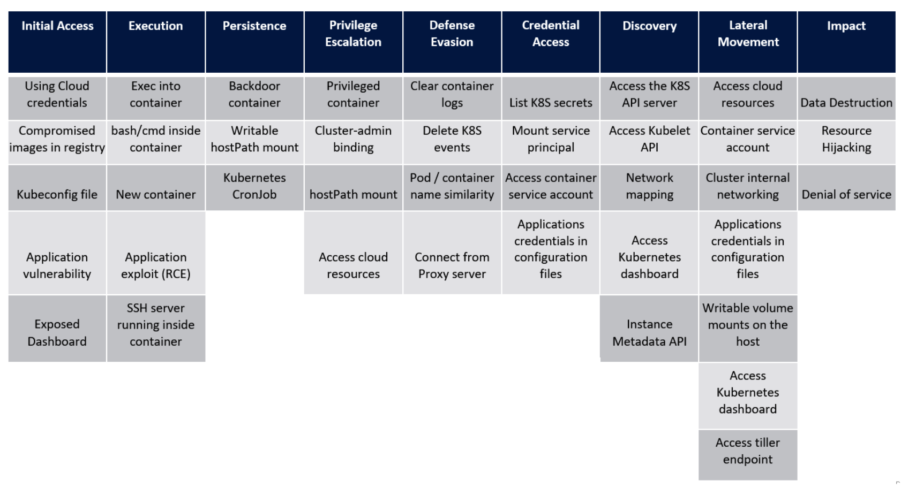

- 00 为什么我们要学习 Kubernetes 技术.md.html
- 01 重新认识 Kubernetes 的核心组件.md.html
- 02 深入理解 Kubernets 的编排对象.md.html
- 03 DevOps 场景下落地 K8s 的困难分析.md.html
- 04 微服务应用场景下落地 K8s 的困难分析.md.html
- 05 解决 K8s 落地难题的方法论提炼.md.html
- 06 练习篇：K8s 核心实践知识掌握.md.html
- 07 容器引擎 containerd 落地实践.md.html
- 08 K8s 集群安装工具 kubeadm 的落地实践.md.html
- 09 南北向流量组件 IPVS 的落地实践.md.html
- 10 东西向流量组件 Calico 的落地实践.md.html
- 11 服务发现 DNS 的落地实践.md.html
- 12 练习篇：K8s 集群配置测验.md.html
- 13 理解对方暴露服务的对象 Ingress 和 Service.md.html
- 14 应用网关 OpenResty 对接 K8s 实践.md.html
- 15 Service 层引流技术实践.md.html
- 16 Cilium 容器网络的落地实践.md.html
- 17 应用流量的优雅无损切换实践.md.html
- 18 练习篇：应用流量无损切换技术测验.md.html
- 19 使用 Rook 构建生产可用存储环境实践.md.html
- 20 有状态应用的默认特性落地分析.md.html
- 21 案例：分布式 MySQL 集群工具 Vitess 实践分析.md.html
- 22 存储对象 PV、PVC、Storage Classes 的管理落地实践.md.html
- 23 K8s 集群中存储对象灾备的落地实践.md.html
- 24 练习篇：K8s 集群配置测验.md.html
05 解决 K8s 落地难题的方法论提炼
做过技术落地的读者应该有所体会，任何技术经过一段时间的积累都会形成一套约定成熟的方法论，包括 Kubernetes 也不例外。在这些落地实践中比较突出的问题，有构建集群的问题、CI/CD 如何构建的问题、资源租户管理的问题，还有安全问题最为突出。本文为了让使用 Kubernetes 的后来者能少走弯路，通过总结前人经验的方式给大家做一次深度提炼。
构建弹性集群策略
Kubernetes 集群架构是为单数据中心设计的容器管理集群系统。在企业落地的过程中，因为场景、业务、需求的变化，我们已经演化出不同的集群部署方案，大概分类为统一共享集群、独立环境多区集群、应用环境多区集群、专用小型集群：
| 成本 | 管理 | 弹性 | 安全 | |
|---|---|---|---|---|
| 统一共享集群 | ||||
| 独立环境多区集群 | ||||
| 应用环境多区集群 | ||||
| 专用小型集群 |
通过以上的对比分析，显然当前最佳的方式是，以环境为中心或以应用为中心部署多集群模式会获得最佳的收益。
构建弹性 CI/CD 流程的策略
构建 CI/CD 流程的工具很多， 但是我们无论使用何种工具，我们都会困 惑如何引入 Kubernetes 系统。通过实践得知，目前业界主要在采用 GitOps 工作流与 Kubernetes 配合使用可以获得很多的收益。这里我们可以参考业界知名的 CI/CD 工具 JenkinsX 架构图作为参考：

GitOps 配合 Jenkins 的 Pipeline 流水线，可以创建业务场景中需要的流水线，可以让业务应用根据需要在各种环境中切换并持续迭代。这种策略的好处在于充分利用 Git 的版本工作流控制了代码的集成质量，并且依靠流水线的特性又让持续的迭代能力可以得到充分体现。
构建弹性多租户资源管理策略
Kubernetes 内部的账号系统有 User、Group、ServiceAccount，当我们通过 RBAC 授权获得资源权限之后，其实这 3 个资源的权限能力是一样的。因为使用场景的不同，针对人的权限，我们一般会提供 User、Group 对象。当面对 Pod 之间，或者是外部系统服务对 Kubernetes API 的调用时，一般会采用 ServiceAccount。在原生 Kubernetes 环境下，我们可以通过 Namespace 把账号和资源进行绑定，以实现基于 API 级别的多租户。但是原生的多租户配置过于繁琐，一般我们会采用一些辅助的开源多租户工具来帮助我们，例如 Kiosk 多租户扩展套件：

通过 Kiosk 的设计流程图，我们可以清晰地定义每一个用户的权限，并配置合理的资源环境。让原来繁琐的配置过程简化成默认的租户模板，让多租户的配置过程变得更标准。
构建弹性安全策略
基于 Kubernetes 容器集群的安全考量，它的攻击面很多。所以我们要想做一份完备的安全策略，依然需要借助在系统层面的安全经验作为参考。根据业界知名的 MITRE ATT&CK 全球安全知识库的安全框架设计，我们有如下方面需要考量：

Initial Access（准入攻击面）
我们需要考虑的面主要是认证授权的审计工作。比如在云端的 Kubernetes，当云端的认证凭证泄露就会导致容器集群暴露在外。比如 Kubeconfig 文件，它是集群管理员的管理授权文件，一旦被攻击者获得授权，整个集群就会暴露在攻击者的眼前。另外基础镜像的潜在 Bug 问题、应用程序的漏洞等问题，稍有不慎，也会对集群带来安全隐患。还有内置的开源面板 Kubernetes Dashboard 也不应该暴露在外网，需要保证其面板的端口安全。
Execution（执行攻击面）
本攻击面需要防范的地方是防止攻击者能直接在容器内部执行程序的能力。比如 Kubernetes 的 kubectl exec 命令就可以进入容器内部执行命令。另外，攻击者如果包含有运行容器的权限，就可以使用合法的 Service Account 账号访问 API Server，然后尝试攻击。还有如果容器内置了 SSH 服务，也能通过网络钓鱼的方式让攻击者获取容器的远程访问权限。
Persistence（后门攻击面）
这个攻击面主要利用集群特性来部署后门来获得持续控制集群资源的目的。比如提供含有后门程序的容器就可以在每一台主机上部署一个实例隐藏后门程序。另外，Kubernetes 集群默认支持 hostPath 挂载特性方便攻击者挂载可读写目录并在主机留下后门程序，方便下次通过 Cronjob 技术挂载此目录并执行后门程序。
Privilege escalation（权限提权攻击面）
这里主要是因为容器默认具备系统特权执行的能力，当容器启动 Privileged 参数是可以直接访问主机 Kernel 提供的系统能力的，让攻击者可以执行系统后门攻击。另外，Kubernetes 内置了 cluster-admin 超级管理员权限，当攻击者具有 cluster-binding 的权力，他就可以赋予普通用户 cluster-admin 的角色并直接取得集群管理员的角色权力。
Defense evasion（防御性攻击面）
这个技术主要是攻击者通过清空日志或者事件来隐藏自己的攻击行踪的技术。比如：攻击者通过删除容器系统日志来隐藏后门程序容器的破坏行为。另外攻击者可以通过 kubectl delete 方式重置容器实例，变相清空事件日志来达到隐藏攻击行为。
Credential access（凭证访问攻击面）
这个攻击技术主要是攻击者了解 Kubernetes 的特性，专门扫描获取密钥凭证的技术。比如通过扫描 secrets 获得潜在的攻击密钥。另外容器应用程序一般通过环境变量赋值密钥位置，攻击者也可以通过遍历环境变量获得敏感凭证数据。
Discovery（扫描攻击技术面）
当攻击者熟悉 Kubernetes 集群的特性之后，可以通过扫描 API Server 的接口、Kubelet API 接口、Pod 端口获得必要的攻击漏洞。另外攻击者可以在集群中运行容器，然后渗透进入 Dashboard 开源面板容器，用此面板容器的身份去 API Server 收集集群的信息。
Lateral movement（侧面攻击面）
攻击者通过第三方系统的漏洞获得攻击 Kubernetes 集群的能力。比如当攻击者拥有 Dashboard 的管理权限，就可以通过内部容器的 exec 能力在容器内部执行木马漏洞程序。因为集群内部的 Pod 网络是互联互通的，所以攻击者也可以任意访问任何感兴趣的 Pod 容器。
Impact（破坏攻击面）
攻击者通过破坏、滥用和扰乱正常执行行为来达到破坏环境的目的。例如删除 Deployment 配置、存储和计算资源等破坏容器运行。另外就是在容器内运行挖矿程序等非法滥用计算资源。还有 API Server 的拒绝服务攻击让集群不可用。
为此，我们的安全策略是给用户提供最小的授权来运行容器。很多用户通过建立专用的管理面板来阻隔用户对 Kubernetes 的接触，这是比较常见的做法。但是，目前云端很多 Kubernetes 服务仍然会让用户接触到主机层面的入口，让安全问题暴露在潜在攻击者的面前。一般通过 VPC 的方式限制只有内部人员可以访问集群，但是内部的安全审计仍然是一个长期需要维护的过程，需要专业的安全人员制定完善的防范策略来降低攻击风险。
总结
通过以上常见问题的分析和实践，我们发现 Kubernetes 的优点和缺点都非常鲜明，让我们爱恨交织。因为 Kubernetes 的系统复杂，让很多操作步骤都变得复杂起来。所以，在结合前人经验的同时，很多开发团队提供了开源的增强组件来加固 Kubernetes 集群的方方面面的能力。我建议大家可以多积累并使用这些增强组件来加固自己的集群，让我们一起站在巨人的肩膀上用好 Kubernetes 集群。